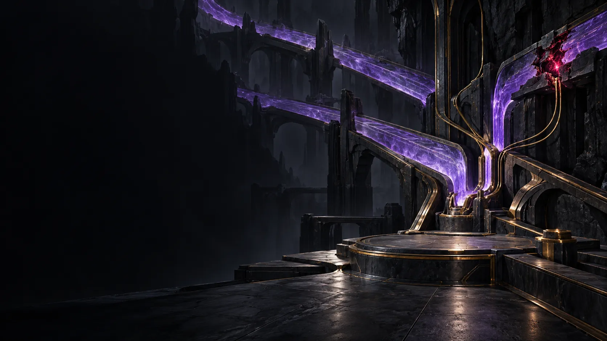

Defdef’s territory
The Creature
of the Internet.
One operating point. One contained interruption.
SIGNAL ARTIFACT · OPTIONAL DISCOVERY
One stray signal.
The interruption stays beside Defdef’s station. Inspect it if you’re curious.
Inspect the signal +
Defdef operates the signal.